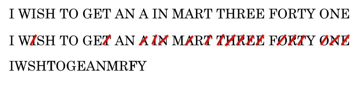
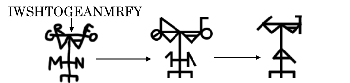

A sigil is one of the most common elements of any magical practice, and can be great fun even for those not inclined towards believing in such things. A sigil is, in short, a symbol that focuses energy towards an idea through means of abstraction. The magician can focus on the symbol, and thus the idea, on a sublimated level that bypasses conscious, linguistic thought. This is only one of many methods of constructing a sigil.
Begin by writing out the targeted desire or idea in plain english, without any punctuation or capitalization.
Next, remove all duplicate letters from the produced phrase.
Finally, arrange these letters into eachother to form some kind of shape, refining until the individual letters are no longer noticable. Now you have a sigil! In order for it to be able of taking a kind of effect, it must first be 'lost', and the connection between the original phrase and the sigil severed. One can do this in many ways - here are several:
Main Source: Carroll, Peter J. Liber Null and Psychonaut: The Practice of Chaos Magic. Weiser Books, 2022.